HackXR 2019 is a responsive static website built using Bootstrap for HackXR, Triton XR's 36 hours Extended Reality Hackathon. With the help of Triton XR's
Branding Committee, I designed the website using Adobe XD. I asked for user feedbacks from colleagues, friends, and a working UX Developer in the industry
before implementing the website itself. The goal of the website is to attract potential hackathon participants and to inform user with up-to-date information.
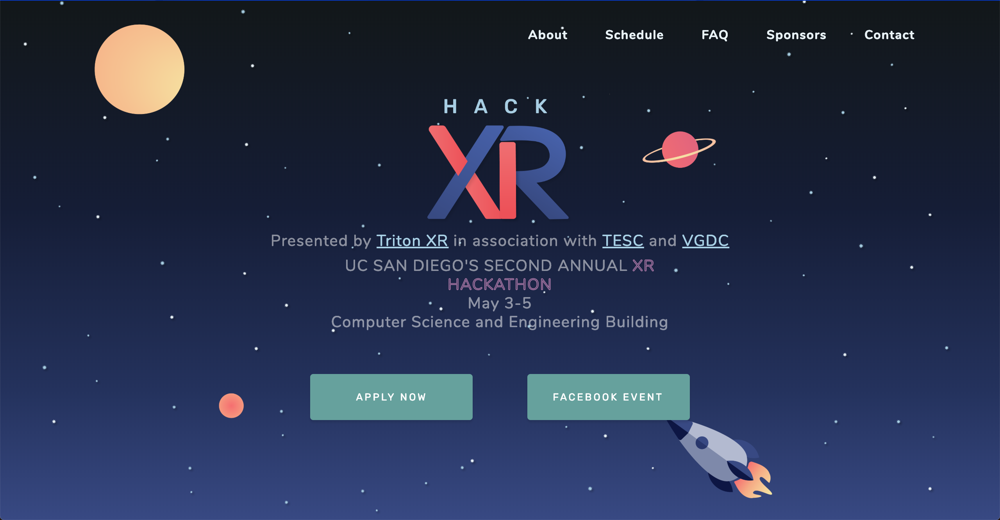
HackXR's landing page
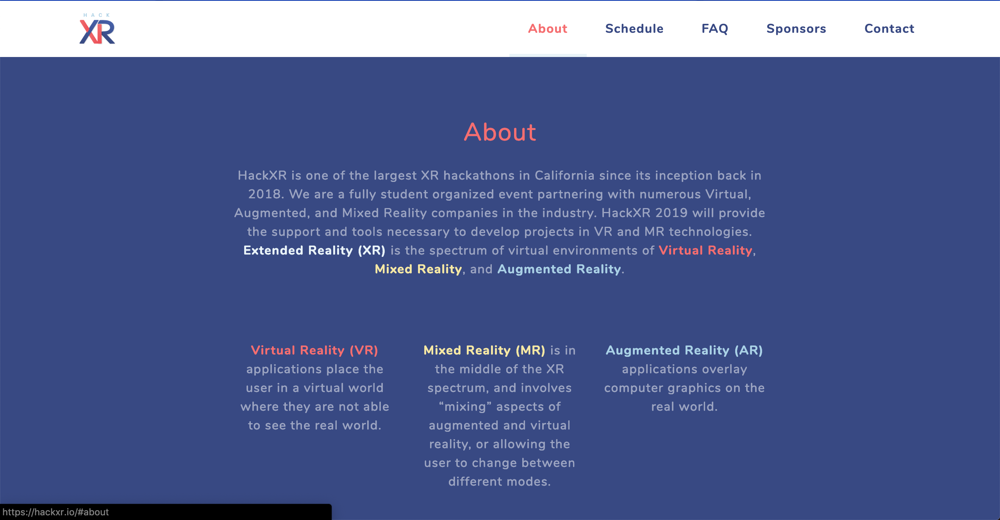
This section of the page informs user what the hackathon is about and what Virtual, Augmented, and Extended Reality is.
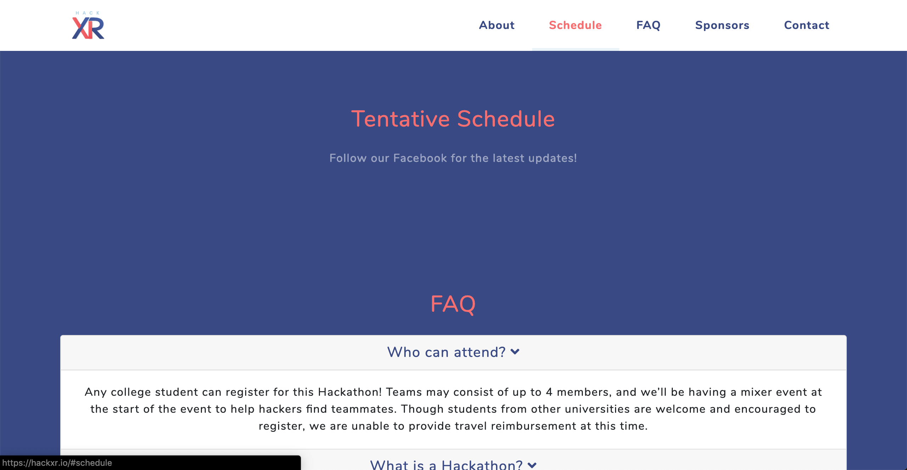
This section will display the HackXR schedule once it is finalized, and the FAQ section provides user with answers to frequently asked questions.
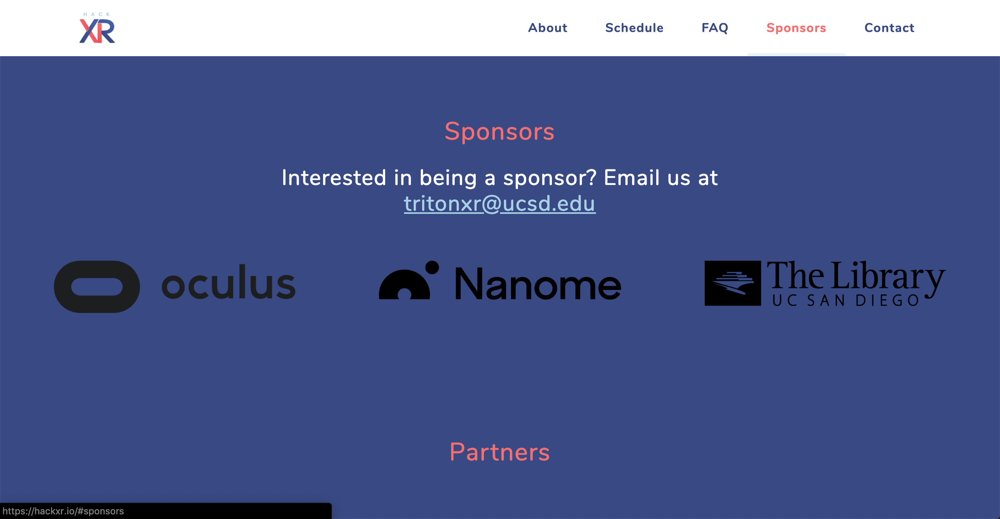
This section contains all of the current sponsors and partners for HackXR and will be updated as more sponsors and partners are finalized.
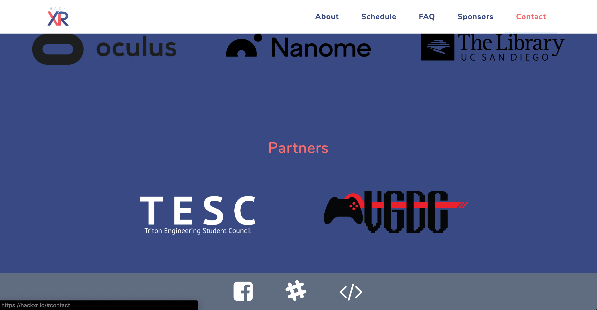
This section contains icons for the relevant resources for the hackathon.
Overview Society of Asian Scientists and Engineers (SASE) at UCSD is part of a national organization founded in 2003 in East Coast to add diversity. SASE at UCSD won awards almost every year and is very strong on the outside.Their current biggest event is Dining with Professionals (DWP), where they invite companies from San Diego area to come dine with UC San Diego students and talk about their work.
Goal The main focus of the SD chapter has been to create meaningful connections with members while also preparing them for a professional career. Our client wants to have a website that can convey that aspect of SASE to users and make them feel encouraged to join.
Triton XR website is a static web page created for the organization Triton XR. It have all of the latest information about the organization Triton XR, its officer team, events,
and other Triton XR relevant information. Because Triton XR was rebranded from VR Club at UCSD, the website visuals and contents needed update. I took initiative to work with Triton XR's 2018-2019 Branding
Committee to update the website's user interface and contents.
The challenge I faced while working on this website was the lack of knowledge on how the website was hosted and where was it deployed as the previous web team did not left any documentations, and nobody in the officer
team worked on the website. I asked around and experimented with the website before I figured out how everything works. After that, I created a short Google Doc to document all of the information I had regarding the
website to next year's web team.
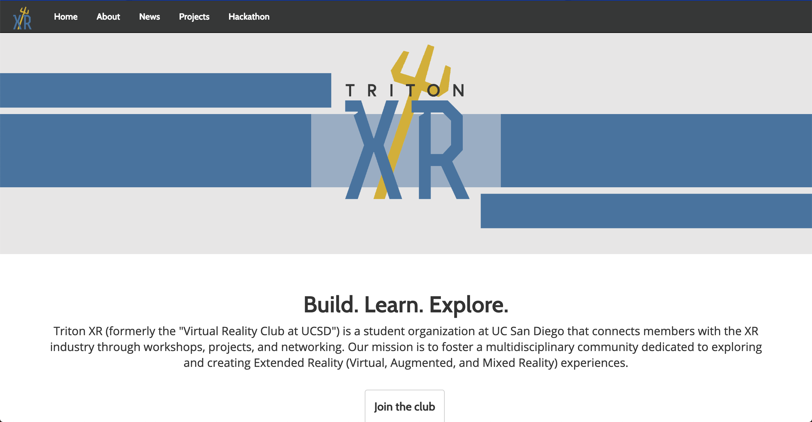
Triton XR's landing page
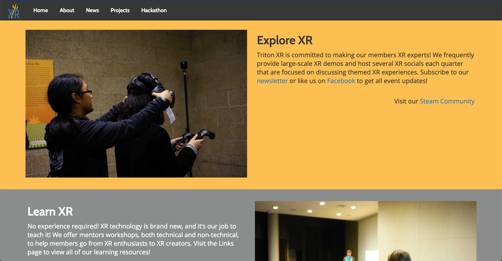
This part of the home page informs visitor what the organization is about as well as some resources and contacts to the organization.
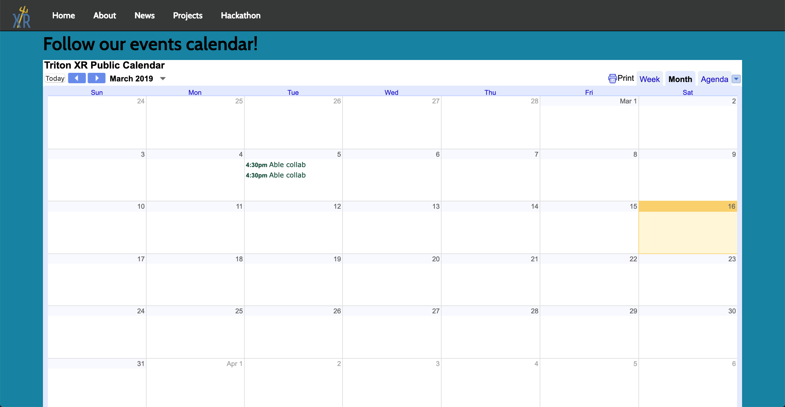
The event calendar is connected with the Triton XR public calendar so all publicized events are displayed on it.
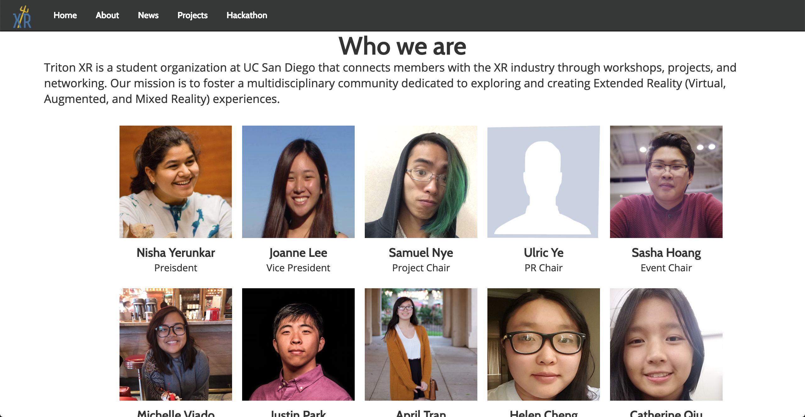
This page displays all of the Triton XR officers for the academic year of 2018-2019.
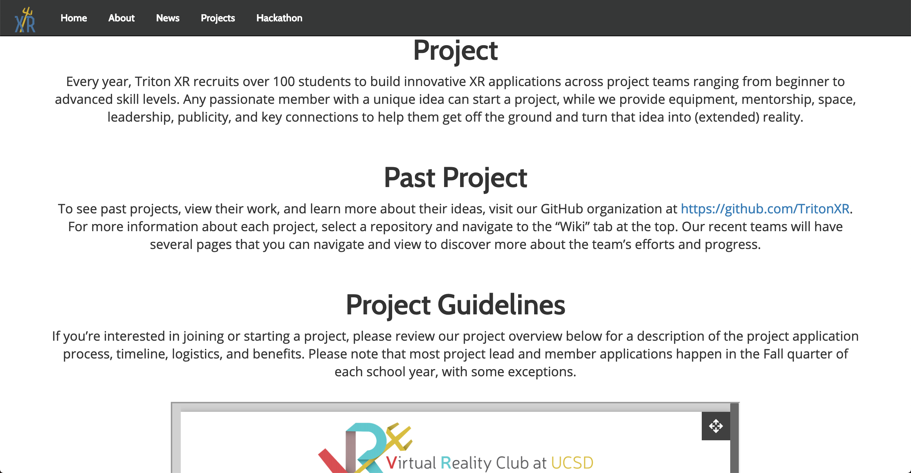
All of Triton XR's project guidelines and information are displayed here.
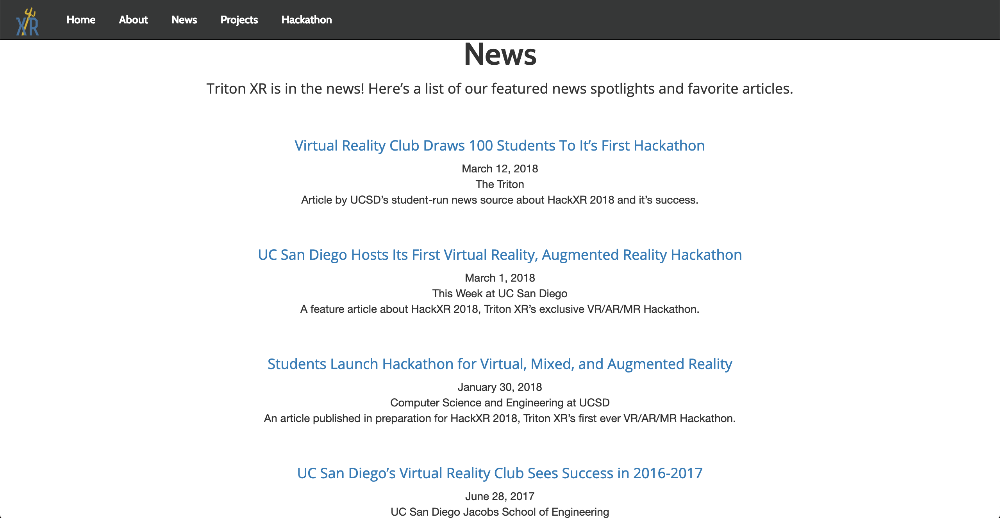
All of the news articles about Triton XR are listed in this page.
In my Human-Computer Interaction class, my group redesigned the mobile version of TritonEd, UC San Diego's Learning
Management System. After the first round of user testing to uncover the usability errors, we chose to focus on the
navigation process in the homepage to fix several of the usability errors. We came up with four redesigns on paper,
then use InVision and Adobe XD to create two final redesigns. In our second round of user testing, users prefer our
redesign because of its simplicity and ease of use. We tried to introduce several new features or ways of interaction,
but it deviated too much from the original website. Users either were unaware of these new features or were confused by
them. Overall, we learned that despite how unoptimized the original site is for mobile, students adopted to the design
and got around the design flaws.
CloStat provides users with clothing recommendations based on the up-to-date weather information. It is a
virtual closet that let the user keeps track of the status of clothing (clean or worn) to allow a more
accurate recommendation. It is created using Firebase Realtime Database, Node.js, npm, handlebars, OpenWeatherMap API.
BrainStorm
In my Human-Computer Interaction (HCI) Programming Studio class (Cogs 121), my group brainstormed ideads
about what mobile web application to make that centered around the theme of interacting with real world data.
We all liked the idea of having something to narrow down on what clothes we should wear from day-to-day because
California's ever-changing weather and temperature made it hard for us to wear something we like while still
enjoying the outdoor.
Paper Prototype
My group used paper prototype to design what would later be called Clostat. We mapped out each of the screens that will be
displayed when the users click different buttons on the web app. In additon, we also mapped out the different ways the user
might interact with the app and think of ways to get around any user problems.
The Application
For this project, I implemented user authentication using Firebase Authentication, implemented the OpenWeatherMap API, designed and implemented Firebase Realtime Database, and helped designed the application.
Some challenges I faced while working on this project was implementing Firebase Realtime Database as my whole group has never used it before. I also tried to optimize the design of the database to decrease the
time the application need to retrieve data. This was my second time developing in web, so there were still a lot of things that I knew very little about, such as node.js, express, and npm. I did some research
to get some general ideas of them and their basic usage.
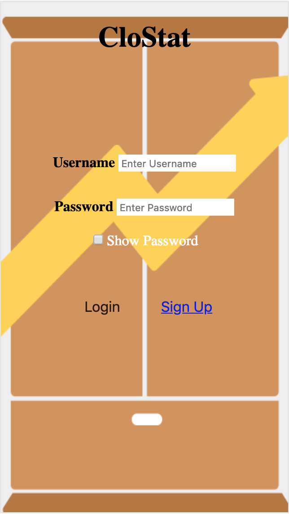
Clostat's login page.
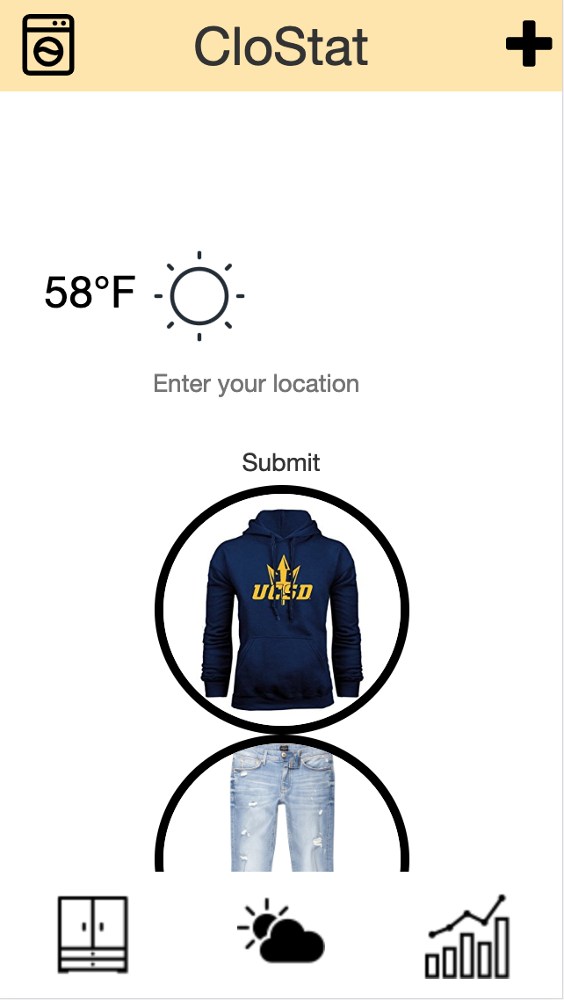
Clostat home page showing the current location or a custom location's weather as well as some recommended clothings.
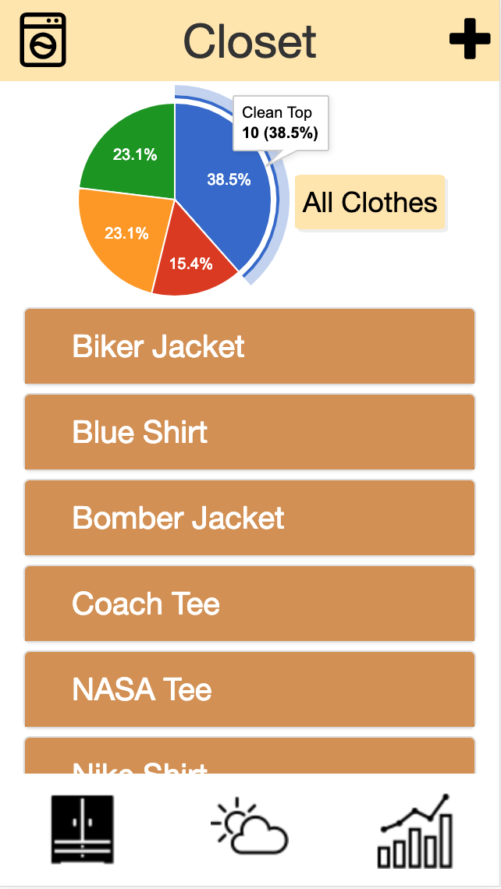
The user's virtual closet containing all of his or her dirty/clean top/bottoms.
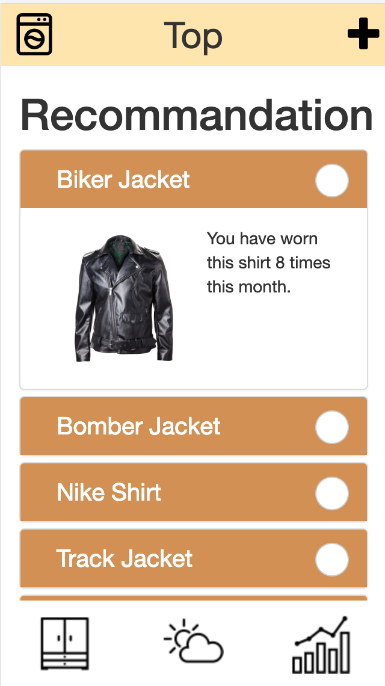
The recommended clothes for the user depending on the current temperature.
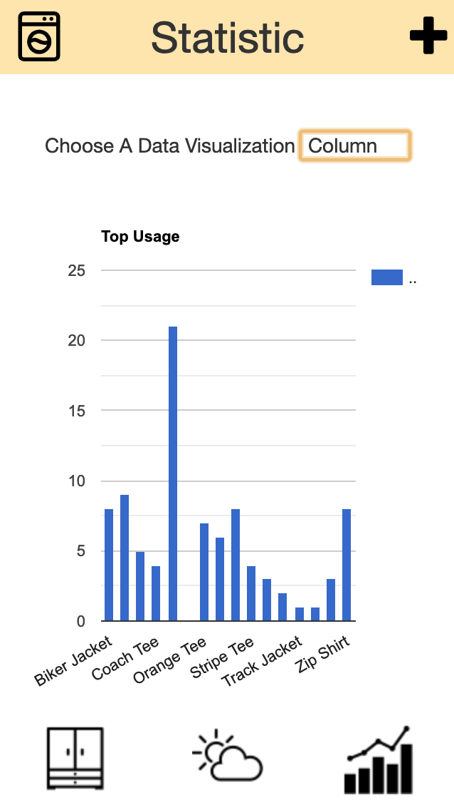
A bar chart displaying the user's clothing wearage for the month.
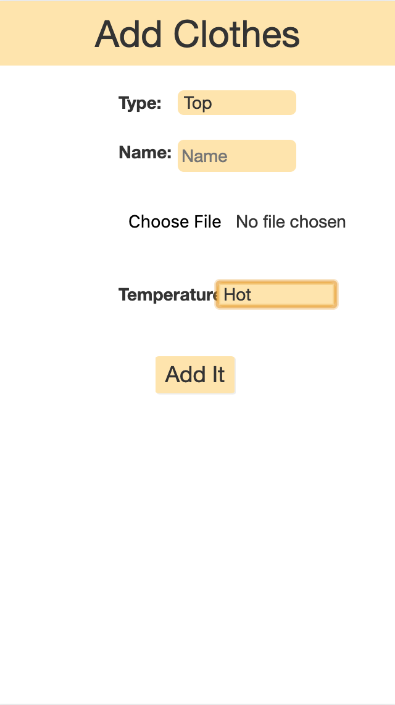
This page lets the user to add clothes into his or her virtual closet.
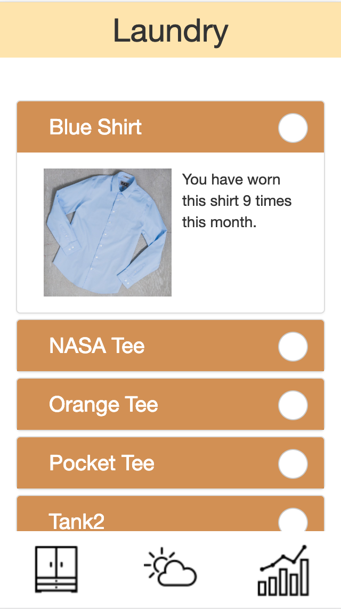
This page displays all of user's worn clothing, and user can mark the cloth(es) to "clean" them.
Markit allow users to scan barcodes to compare the user reviews on store products to make a wiser
purchase. Markit is designed to combat the struggle of struggling to find the best quality product
from the massive amount of choices offered to the consumer in store. It brings the online ecommerce
feature of reviewing products to the physical world.
BrainStorm
In my HCI Interaction Design class (Cogs 120), my group brainstormed ideas about what mobile web application
we can make that deals with everyday problems and satisfy the theme of Environmental Interaction, and we all thought of
the problem we had while grocery shopping. As we walked down the aisle, the sheer amount of choices overwhelmed us. We thought
of the different ways we shopped and decided to integrate the online shopping experience with real world grocery shopping.
Paper Prototype
We first used paper prototype to mapped out the most essential features of the app.
Next, we used InVision to improve our paper prototype design and made it an interactive app to further test how users would
interact when using the app. Last, we built the mobile web app MarkIt
using HTML, CSS, JavaScript, Express, Node.js, and Quagga API.
The Application
For this project, I set up version control, created the HTML skeleton for the application, delegated tasks to group memebers,
implemented the Quagga API to detect and scan barcdoes, implemented Google Analytics to perform A/B testing, and implemented
search feature to search for items.
Some challenges I faced while working on this project was trying to find a good API that can detect and scan barcodes easily. I
also had to do some research into barcodes as I was not aware of the different types of barcodes out there. It was also my first time
doing web development, so I knew next to nothing about HTML, CSS, and Javascript, much less web frameworks and libraries. I had to learn
the basics of HTML, CSS, and Javascript on my own, while delegating tasks to my group members, who also had no experience in web development.
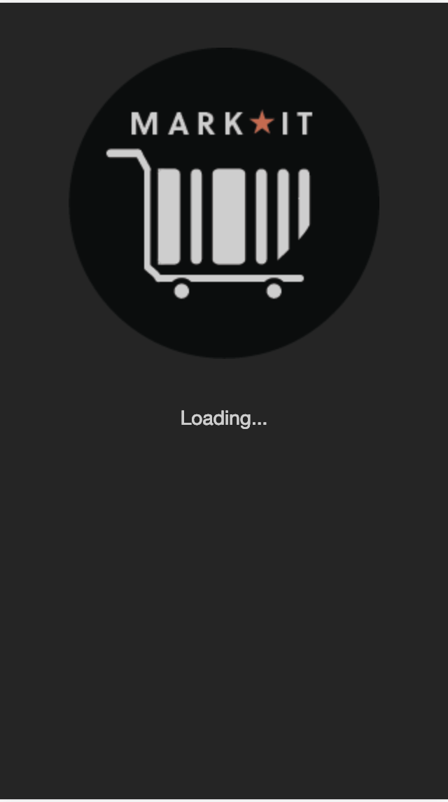
Markit's loading animation screen.
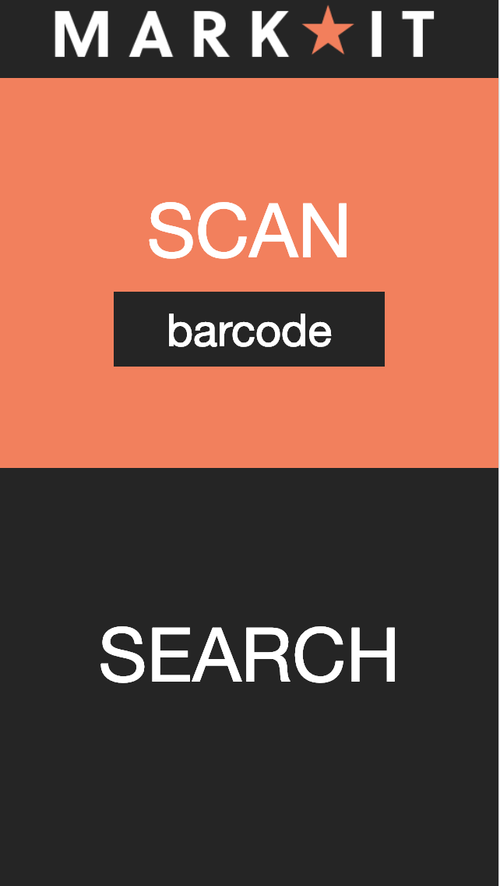
Markit's homepage let user to look up grocery items and related items by searching keywords or scanning the barcode.
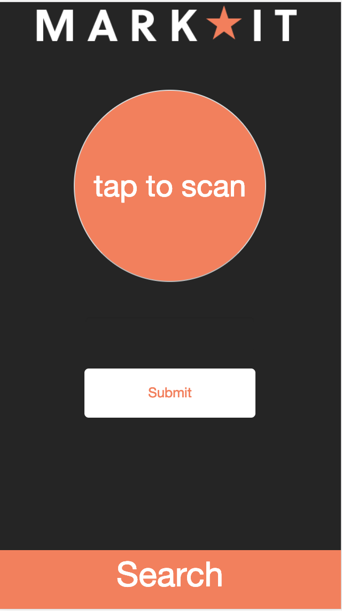
This page lets the user to tap on the button to scan barcodes if they choose to.
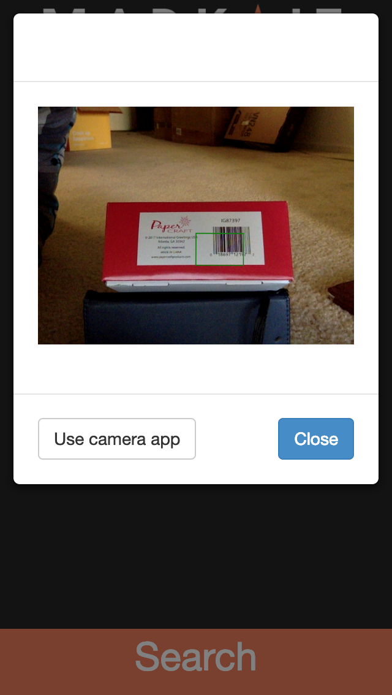
The user needs to give permission to the application for it to access the camera to scan for barcodes.
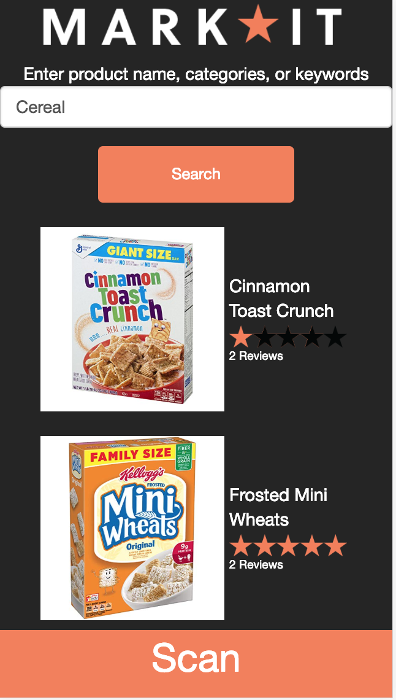
Users can search up keywords or item names here to find related items and their details.
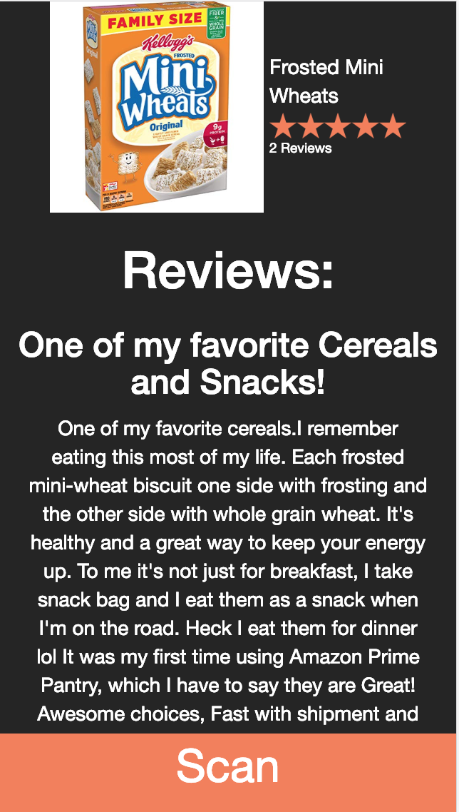
After the users searched for the item, they can tap on the pictures of the items to expand for more details as shown above.